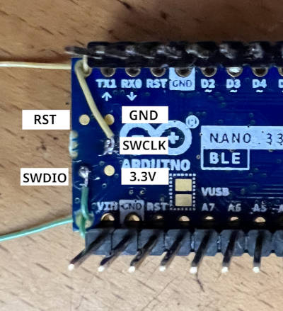

Arduino Nano 33 BLE (Sense)
概述
Arduino Nano 33 BLE 基于 Nordic Semiconductor 的 nRF52840 ARM Cortex-M4F CPU 设计。Arduino 销售该开发板的两种型号：普通的 BLE [1] 型和 BLE Sense [2] 型。"Sense" 型号的区别在于集成了更多传感器，除此之外两者相同。
这些开发板当前的硬件版本为 Rev2，更新了 IMU 和温湿度传感器等器件。
硬件
支持的功能
arduino_nano_33_ble 开发板支持下列硬件功能。
说明
The list of supported hardware features was not generated. Run a full documentation build for the required metadata to be available.
连接与 IO
schematic BLE [3] 包含了 BLE 型号引脚的全部所需信息。"Sense" 型号请参阅 schematic BLE Sense [4]。
将引脚 P1.00 置为高电平即可启用 I2C 上拉，这一操作在系统初始化时自动完成。该引脚在 zephyr,user 设备树节点中以 pull-up-gpios 指定。
编程与调试
说明
The list of supported runners was not generated. Run a full documentation build for the required metadata to be available.
此开发板需要 Arduino 版本的 bossac。使用 zephyr-sdk 自带的 bossac 或 shumatech 主线构建的 bossac 都无法烧录。
可以通过以下两种方式之一获取此版本的 bossac：
从 Arduino 源码树 构建二进制文件
下载 Arduino IDE
在 IDE 中安装开发板支持包
修改 IDE 首选项，启用详细日志输出
构建并烧录一个示例应用程序，然后查看日志，找出 Arduino 存放 bossac 的位置。
在大多数基于 Linux 的系统中，路径为
$HOME/.arduino15/packages/arduino/tools/bossac/1.9.1-arduino2/bossac。
得到 bossac 的路径后，可以将其作为参数传给 west：
west flash --bossac="<path to the arduino version of bossac>"
例如
west flash --bossac=$HOME/.arduino15/packages/arduino/tools/bossac/1.9.1-arduino2/bossac
在 Windows 上需要使用 Arduino IDE [8] 中的 bossac.exe，还需要用 --bossac-port 参数指定 COM 端口：
west flash --bossac=%USERPROFILE%\AppData\Local\Arduino15\packages\arduino\tools\bossac\1.9.1-arduino2\bossac.exe --bossac-port="COMx"
烧录
备注
查看开发板即可轻松识别 Rev2，板上印有名称/版本：NANO 33 BLE REV2（"Sense" 型号为 NANO 33 BLE SENSE REV2）。为 Rev2 构建时 必须使用 标签 @rev2。Zephyr 一直支持 Rev1，其构建命令保持不变。标签 @rev1 是默认值，可以省略。
为开发板版本 Rev2 构建 Blinky：
west build -b arduino_nano_33_ble@rev2 samples/basic/blinky
为开发板版本 Rev1 构建：
west build -b arduino_nano_33_ble samples/basic/blinky
使用 USB 线将开发板连接到计算机。双击开发板上的 RESET 按键。开发板应会断开并重新连接，USB 端口附近应有一个橙色 LED 呈呼吸闪烁。
然后即可使用上述脚本烧录镜像。
应能看到红色 LED 闪烁。
调试
可以使用支持 CMSIS-DAP 的调试适配器调试开发板上的应用程序。此开发板带有用于调试的 SWD 接口，但它以测试焊盘（而非连接器）的形式位于 PCB 背面，因此需要一些有难度的焊接。至少需要焊接 SWDIO 和 SWCLK（如图所示）。GND、3.3V 和 RESET 也可在 DIP 连接器上找到，因此使用 DIP 连接器连接可能比焊接更容易。

连接调试适配器后，即可按常规方式进行调试。输入以下命令开始调试。
# From the root of the zephyr repository
west build -b arduino_nano_33_ble samples/basic/blinky
west debug
使用 TRACE32（GDB 前端）调试
Lauterbach 提供 GDB Debug version TRACE32 for Arduino Nano 33 BLE [5]。该许可证与 Arduino Nano 33 BLE 硬件序列号绑定，同样可用于 Zephyr RTOS。
按照 Arduino 教程 Lauterbach TRACE32 GDB Front-End Debugger for Nano 33 BLE [6] 中的说明安装 TRACE32。
安装 TRACE32 后，应设置环境变量 T32_DIR。如果 TRACE32 安装在主目录下，运行以下命令（最好将其写入登录脚本）。
export T32_DIR="~/T32Arduino"
此 TRACE32 是 TRACE32 as GDB Front-End [7] 版本。启动 TRACE32 之前，需要先用以下命令运行 GDB 服务器。
west build -b arduino_nano_33_ble samples/basic/blinky
west debugserver
启动 GDB 服务器后，执行以下命令运行 TRACE32 并连接 GDB 服务器。
west debug --runner=trace32 -- gdbRemote=:3333
TRACE32 脚本处理 -- 符号之后的参数。可以设置以下选项。
名称 |
是否必需？ |
说明 |
gdbRemote |
必需 |
设置 GDB 服务器地址或串口的设备文件。
可以是 <hostname>:<port> 或 <devicename>。
e.g.)
gdbRemote=localhost:3333, gdbRemote=/dev/ttyACM0 |
terminal |
可选 |
设置连接到目标控制台的串口设备文件。
e.g.)
terminal=/dev/ttyACM1 |
userScript |
可选 |
设置在系统脚本执行完毕后运行的用户脚本。
e.g.)
userScript="./user.cmm" |